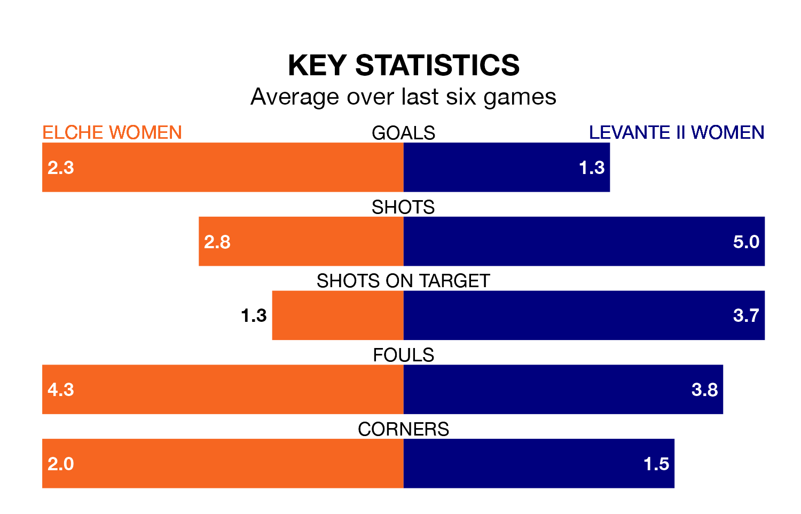

Saturday's early match between Elche Women and Levante II Women promises to be one for the neutrals, as two of Segunda Federación Femenina's most free-scoring sides go head-to-head.
Ahead of the game, Elche and Levante II sit second and joint-fourth in the goal-scoring charts, with 29 and 26 goals respectively.
Elche are 12th in the table after 14 games, of which they have won six and drawn four, earning 22 points.
Levante II are four places ahead of the hosts in eighth, with eight wins and three draws putting them on 27 points.
Elche are in mixed form in Segunda Federación Femenina, with three wins and a draw from their last six games.
And also with three wins and a draw over that period, the away side's form is identical – they have both taken 10 points from 18.
Elche's last match was on December 10, a 1-1 draw against La Solana Women, with getting the goal for Elche.
Levante II drew 1-1 with Unión Viera Women last time out, on Sunday, with on the scoresheet.
Updated: 11:31, 09/01/24